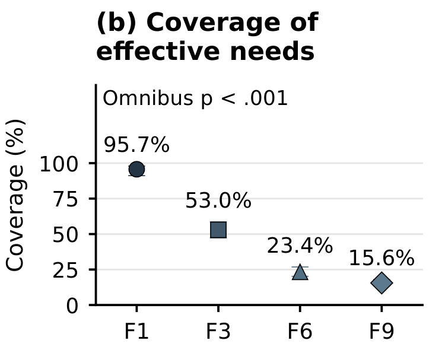
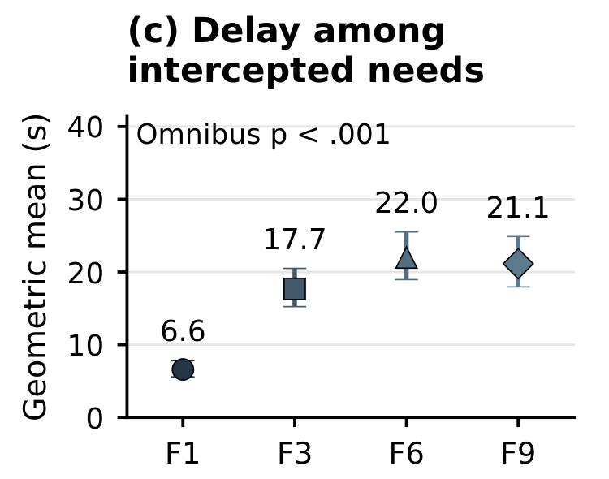
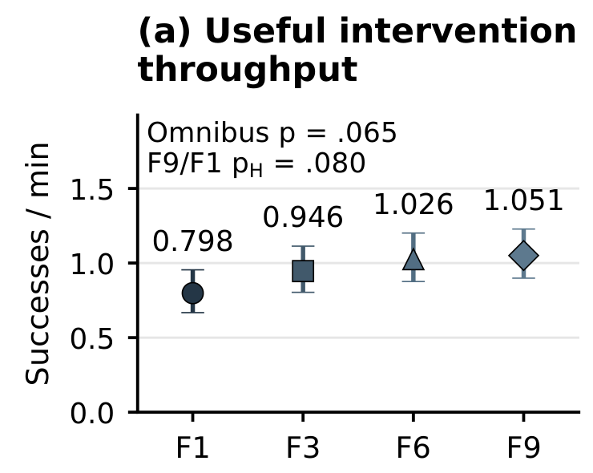

Supervision Study
How should operators inspect remote robot scenes?
Conditions
- Desktop-RGB
- VR-RGB
- VR-PointCloud
Fixed configuration
Kinesthetic Teaching
Nine cells · Both tasks
Paper Submitted to ACM HRI 2027
Selective human intervention allows one operator to support multiple autonomous manipulators while collecting corrective demonstrations for policy learning. Its effectiveness depends on how operators inspect robot scenes, provide corrections, and manage concurrent requests for assistance. We present Supervise–Intervene–Improve, a risk-informed framework linking supervision, corrective control, and intervention-data collection for offline learning.
Three independent user studies with 72 participants evaluate visualization, corrective-control interfaces, and fleet size during simulated manipulation. We compare Desktop-RGB, VR-RGB, and VR-PointCloud visualization; Kinesthetic Teaching, Motion Controller, and FACTR teleoperation; and fleets of one to nine robots.
VR-PointCloud visualization improved recovery and shortened corrections relative to both RGB interfaces. Kinesthetic Teaching achieved higher recovery than Motion Controller in the primary analysis, although the result was sensitive to the analysis specification and did not reach corrected significance in two sensitivity analyses. Kinesthetic Teaching also required more total intervention time than Motion Controller. Increasing fleet size reduced intervention coverage and delayed assistance. Useful intervention throughput increased descriptively, but the corrected statistical evidence was inconclusive. These findings show that scalable human oversight requires interfaces that support effective corrections alongside timely access to assistance.
One operator. Selective assistance. Multiple autonomous cells.
 Enlarge figure
Enlarge figure
72 participants 3 independent studies 24 participants per study
How should operators inspect remote robot scenes?
Kinesthetic Teaching
Nine cells · Both tasks
How should operators take control and correct a robot?
VR-PointCloud
Nine cells · Both tasks
How does fleet size affect access to human assistance?
Kinesthetic Teaching · VR-PointCloud
T-Shape Assembly
Three within-subjects study designs (Paper Table 1), with 24 participants per cohort. Each participant experienced all conditions of one study. “Both tasks” refers to T-Shape Assembly and Cup Insertion. Manipulation was simulated, with physical input devices; autonomous policies remained fixed during the studies.
Each study used an independent participant cohort. The design supports within-study comparisons but not direct cross-study recovery comparisons or supervision-by-controller interaction claims.
How should operators see the scene?

Four camera views on a desktop display.

The same camera views presented in VR.

Fused geometry for spatial inspection.
Figure 2. Supervision interfaces. Shown during T-Shape Assembly. Adapted from Paper Fig. 4, top row.

VR-PointCloud supported higher recovery and shorter active corrections than both RGB interfaces. Both recovery and timing contrasts against each RGB condition survived Holm correction.
 Enlarge figure
Enlarge figure
How should the operator intervene?

Guide an aligned physical robot.

Map tracked motion to the end effector.

Guide an aligned articulated leader.
Figure 5. Corrective-control interfaces. Physical input devices; robot manipulation took place in simulation. Adapted from Paper Fig. 4, bottom row.

KT exceeded MC in recovery in the primary analysis, although the recovery contrast was sensitive to the analysis specification. KT and MC enabled shorter active corrections than FACTR. Neither recovery contrast involving FACTR survived Holm correction. KT’s total intervention time, which includes preparation, was longer than MC’s.
Analysis sensitivity. The KT–MC recovery contrast did not reach the corrected significance threshold in participant-summary or short-attempt sensitivity analyses. The direction was consistent, but the statistical evidence depended on these analysis choices.
 Enlarge figure
Enlarge figure
What happens as one operator supervises more robots?
Successful corrections alone do not ensure
that every robot receives assistance.

Coverage decreased across fleet sizes, and all pairwise contrasts survived correction. Adapted from Paper Fig. 7b.

F3, F6, and F9 produced longer delays than F1. Comparisons among the larger fleet conditions were inconclusive. Adapted from Paper Fig. 7c.

Useful intervention throughput increased descriptively, but the evidence was inconclusive after correction. Omnibus p = .065; F9/F1 Holm-adjusted pH = .080. Adapted from Paper Fig. 7a.
Coverage is the proportion of recorded assistance needs that reached human-control start.
Response delay is measured from need onset to human-control start, among intercepted needs only; estimates are geometric means.
Useful intervention throughput counts tasks completed at the first valid post-release check per minute of condition time.
24 participants · 95 eligible blocks · 2,663 recorded needs · 756 interceptions. Larger fleets change both visual burden and total demand; these findings do not define a universal operator-capacity threshold.

Supervise–Intervene–Improve links risk-informed supervision, selective correction, and intervention-data collection for offline learning. Across three independent studies, VR-PointCloud supported higher task-averaged recovery and faster correction than RGB interfaces. Kinesthetic Teaching achieved higher recovery than Motion Controller in the primary analysis, but preparation costs increased total intervention time relative to Motion Controller. The recovery contrast was sensitive to the analysis specification and did not reach corrected significance in participant-summary and short-attempt sensitivity analyses.
Larger fleets reduced coverage and delayed assistance: successful corrections alone do not ensure timely support for every robot. Effective oversight therefore requires interfaces that support scene understanding and corrective control while accounting for operator time and access to assistance. Whether the collected corrections improve subsequent autonomous performance remains an open empirical question.
{kind=link}
{kind=link}
{kind=link}